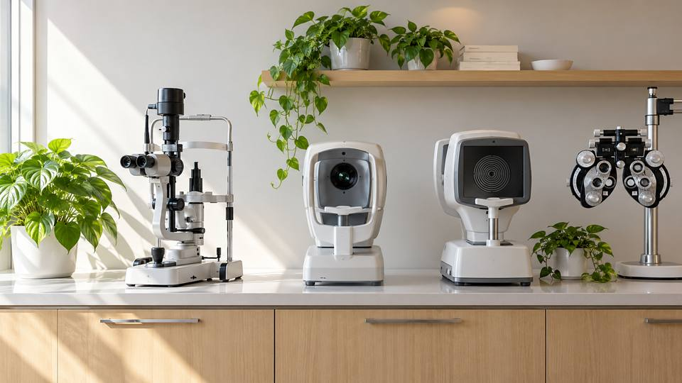
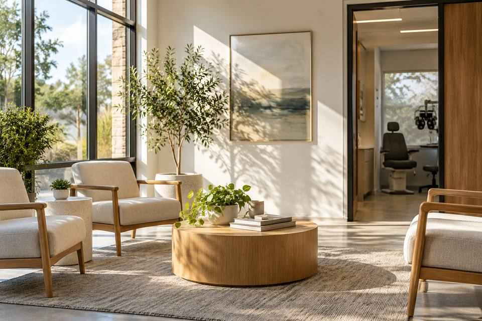
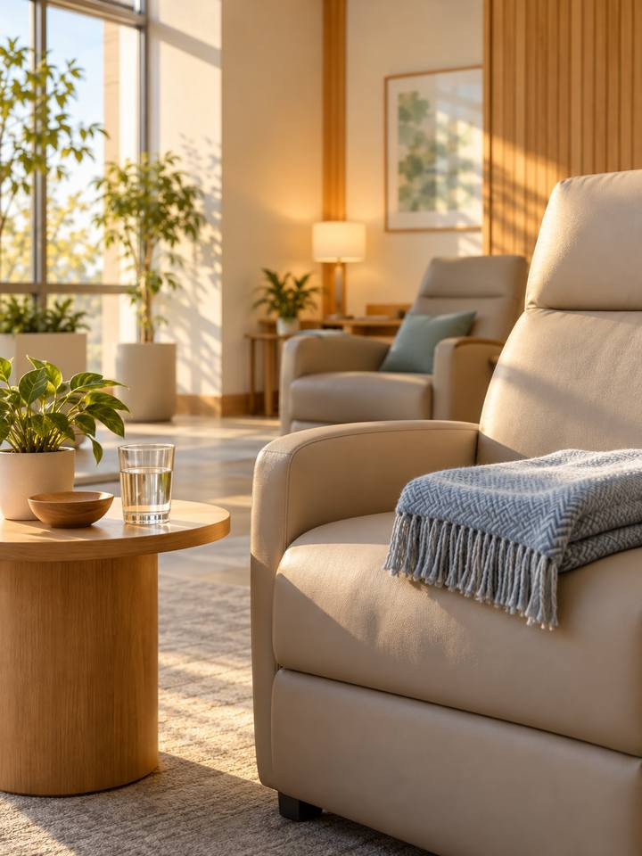
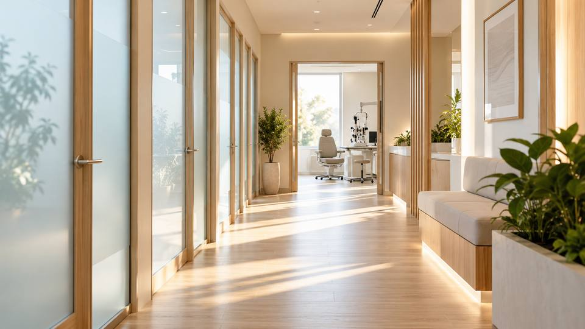
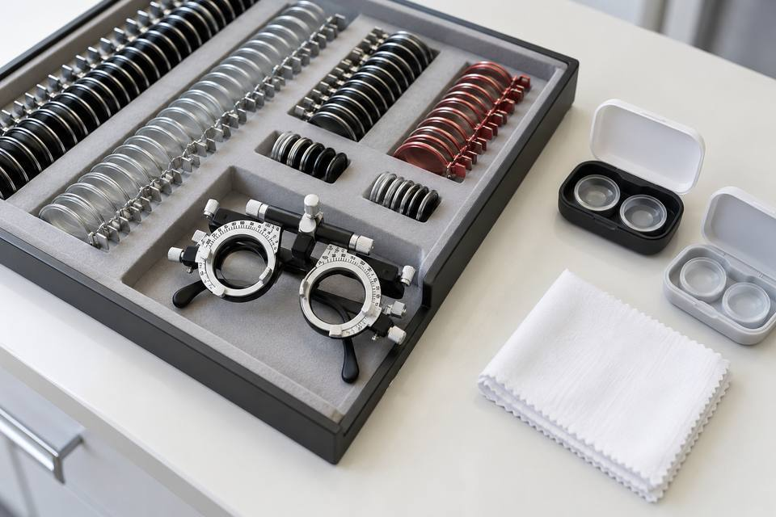
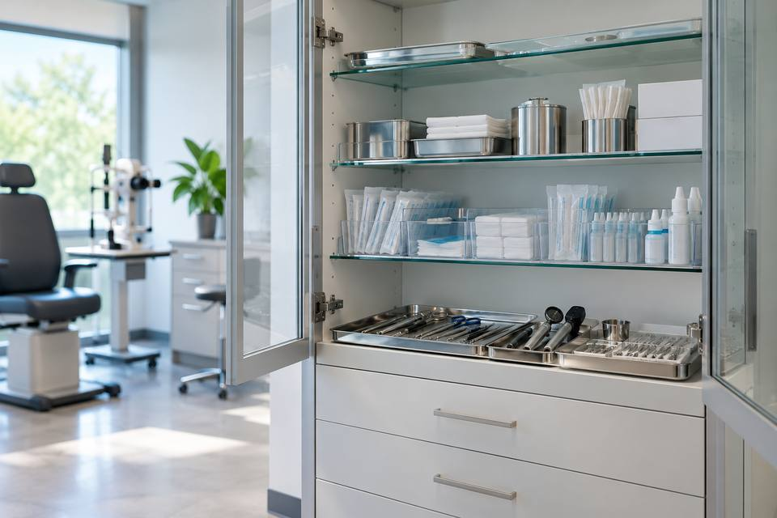
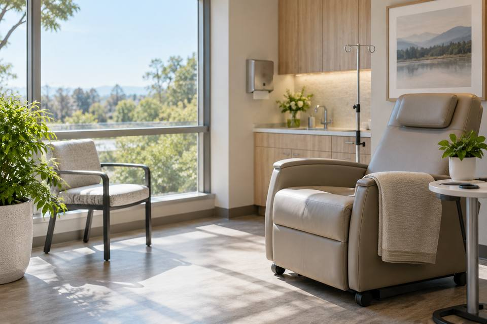

Anti-Aging
항노화
라온피부의원의 항노화 클리닉에서는
축적된 진료 경험을 바탕으로 내원자 한 분 한 분의
주름의 깊이와 피부 탄력, 생활 방식까지 함께 살펴
얼굴선과 피부 상태에 맞는 리프팅 방향을 제안합니다.

Lasting & Balance
라온피부의원은
피부과 전문의, 김서윤 대표 원장이 관리 뒤
피부의 회복 흐름까지 꾸준히 살펴 한 번의 시술이 아닌,
오랜 기간 편안한 피부 상태를 유지하도록 돕습니다.

자연스러운 동안 효과,
라온피부의원의 차별화된 주름 솔루션
라온피부의원의 맞춤 주름 솔루션은 개개인의 피부 상태와
주름 유형에 맞춰 세밀하고 전문적인 치료를 진행합니다하는
주름과 탄력 고민에 맞춰 계획을 세웁니다.
주름만 지우는 데 그치지 않고 표정과 근육 움직임,
피부 구조를 꼼꼼히 살핀 뒤 세밀하게 시술하며,
관리 후에도 과하지 않고 자연스러운 변화를를 이끌어냅니다.
시술 뒤 피부 변화까지 살펴보는 관리,
진료 이후의 회복 과정도 함께 고려합니다.
라온피부의원은 관리가 끝난 뒤에도 피부의 회복 흐름을 꾸준히 살펴
일회성 시술에 그치지 않고
피부가 오래 안정된 상태를 유지하도록 돕습니다.


-
Point 01|
3D 촬영으로 피부 상태를 살피고 상담 전 계획을 세웁니다
-
Point 02|
주름 유형별 복합 설계로 빠른 변화와 오래가는 효과를 함께
-
Point 03|
피부 탄력과 결, 톤과 모공까지 함께 고려한 통합적
안티에이징 플랜 -
Point 04|
진료 뒤에도 철저한 사후 진료 및 회복 지원
맞춤형 리프팅,
라온피부의원의 차별화된 탄력 솔루션
라온피부의원의 탄력 리프팅 솔루션은
얼굴형과 피부 상태를 함께 살피는 개인 맞춤 리프팅 치료를 운영합니다.
여러 리프팅 방식을 피부 상태에 맞춰 구성해 자연스럽고
피부 상태에 맞는 변화를 목표로,
치료 뒤에도 피부 상태를 살피는 사후 관리로 변화를 이어갑니다.
잠깐의 변화에 그치지 않고 피부 건강과 인상까지 생각한
여러 리프팅 방법을 조합한 관리 계획입니다.
라온피부의원의 리프팅 솔루션은
치료 뒤의 피부 관리까지 함께 살핍니다.
치료 후 피부 관리와 회복 케어까지 꼼꼼히 이어가며,
리프팅 효과가 오래 이어지도록 관리합니다.


-
Point 01|
얼굴 윤곽에 따라 달라지는 리프팅 세기와 진행 방식
-
Point 02|
부담은 낮추면서도 피부 변화는 또렷하게 기대하는 관리
-
Point 03|
윤곽과 탄력, 볼륨 회복을 함께 살피는 복합 관리
-
Point 04|
진료 뒤에도 철저한 사후 진료 및 회복 지원
라온피부의원의 차별화된
이중턱 3-step 프로그램
턱 아래 볼륨은 어떤 이유로 달라질까요?
과도한 피하지방과 탄력 저하로 인한 피부 처짐,
피부 탄력과 지방 분포 등 여러 변화가 얼굴선을 바꿀 수 있습니다
라온피부의원의 이중턱 솔루션은
피부과 전문의가 상태를 직접 살펴 알맞은 조합을 제안합니다.
얼굴 윤곽과 이중턱 두께, 피부 탄력을 함께 살핀
얼굴형에 맞춘 3단계 계획으로 이중턱의 지방과 처짐을 함께 살피고,
얼굴 윤곽을 고려한 설계로 이중턱 개선을 돕습니다.
라온피부의원의 이중턱 솔루션은
과한 변화를 피하면서 얼굴선의 자연스러운 균형을
찾도록 계획을 세웁니다.

-
Step 1
지방 집중 분해
브이올렛 주사
브이올렛 주사는 턱 아래 지방 관리를 위해 사용하는
이중턱 개선
주사로, 이중턱 부위에
주입하면 지방을 녹여
세포를 파괴하여
턱 아래 윤곽을 정리하고
피부 탄력에도
효과가 있습니다. -
Step 2
열로 녹이는 지방
아그네스 고주파
아그네스 절연침 고주파의 코팅 니들은
마이크로 니들과
열 에너지를 이용하여
이중턱 지방을 녹이며,
늘어진 피부의
피부 탄력 관리와 윤곽 개선을 함께
기대할 수 있습니다. -
Step 3
흐려진 턱선과 탄력 저하를 함께 살피는
울쎄라, 써마지, 티타늄,
버츄 고주파
고주파와 빛 에너지를 함께 활용해
피부 깊은 층까지
자극하여 이중턱과
턱라인의 늘어진
피부 탄력을 복구하고
아래 얼굴 윤곽의 고민을 살펴봅니다.
Dermatology Column
Move Ahead Archive
4 word difference
Natural 
라온피부의원은 얼굴선의 균형을 살피며 과하지 않은 탄력 관리를 제안합니다.
얼굴과 피부의 균형을 살피는 섬세한 관리로 자연스러운 변화를 목표로 합니다.